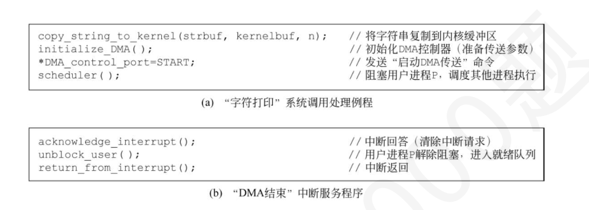

第 31 题
在采用DMA 方式高速传输数据时，数据传送是（ ）
A． 在总线控制器发出的控制信号控制下完成的 B． 在DMA 控制器本身发出的控制信号控制下完成的 C． 由CPU 执行的程序完成的 D． 由CPU 响应硬中断处理完成的 答案与解析 答案：B
DMA 方式的数据传送过程不是由CPU 执行程序完成的，而是在DMA 控制器本身发出的控制信号控制下完成的。
教材第 108 页 第 32 题
以下关于三种I/O 方式的比较，正确的是（ ）。
A． 程序查询方式的CPU 利用率最高 B． 程序中断方式的数据传输速率最快 C． DMA 方式的硬件结构最简单 D． 程序中断方式适用于中低速外设的数据传输 答案与解析 答案：D
程序中断方式通过中断机制让CPU在等待外设时可以执行其他任务，适用于中低速外设的数据传输，D正确；程序查询方式CPU利用率最低，A错误；DMA方式数据传输速率最快，B错误；程序查询方式硬件结构最简单，C错误。
教材第 108 页 第 33 题
关于DMA 控制器的说法，错误的是（ ）
A． 字计数器的作用是记录数据块的长度，每传送1 个字（节），计数减1，到0 时DMA 控制器发出DMA 中断。 B． DMA 控制器是通过执行DMA 中断服务程序来完成数据传输的 C． 一般要用到两个地址寄存器设置源/目设备地址 D． 传输的方向跟控制寄存器有关 答案与解析 答案：B
DMA 中断由CPU 执行，用于DMA 的结束处理，DMA 方式的数据传输由DMA控制器硬件实现。
教材第 108 页 第 34 题
在周期挪用DMA 方式下，下列描述错误的是（ ）。
A． 每当DMA 准备好单字的数据就请求总线 B． DMA 控制器的总线使用优先级高于CPU C． CPU 在整个数据块传送过程中均无法访问主存 D． 每块传输结束时DMA 会产生一个传输完成中断请求 答案与解析 答案：C
周期挪用DMA并非独占总线，而是与CPU交替使用总线。每次DMA仅挪用一个总线周期传输单字数据，传输间隙CPU仍可正常访问主存。只有在“停止CPU”（独占总线）方式下，CPU才会在整个数据块传输期间完全无法访问主存，C错误；周期挪用DMA以单字 （或字节）为单位传输数据，A正确；为确保DMA传输及时响应，DMA控制器的总线请求优先级通常高于CPU，B正确；无论采用何种DMA方式，当整个数据块传输完成后，DMA控制器均会向CPU发送中断请求，通知传输结束，D正确。
教材第 108 页 第 35 题
以下是有关对DMA 方式的叙述，其中正确的有（ ）个I．DMA 方式下，在主存和外设之间有一条物理通路直接相连II．DMA 方式一般不用于键盘和鼠标器的数据输入。 III．在进行数据传送之前，通过硬件完成对DMA 控制器中各参数寄存器的初始值的设定。 IV．发生缺页中断时，若在缺页处理程序中将缺页调入内存采用DMA 方式，则需要把磁盘物理地址写入DMA 控制器中的设备地址寄存器DAR，把页表基地址写入其主存地址寄存器ARV．在DMA 的后处理中，如果还要继续传送，则不需要再对DMA 接口进行初始化VI．采用周期挪用时，发生访存冲突时，CPU 在访存事务结束后挪用一个主存存取周期给DMA
A． 2 B． 3 C． 4 D． 5 答案与解析 答案：A
I 错误，通常所说的DMA 方式下数据在主存和外设之间直接进行传送，其含义并不是说在主存和外设之间建立一条物理上的直接通路，而是在主存和外设之间通过外设接口、系统总线以及总线桥接部件等连接，建立起一个信息可以互相通达的通路。“直接通路”是逻辑上的含义，物理上磁盘和主存不是直接相连的。 II 正确，键盘和鼠标的数据输入由于其数据量小、实时性要求高、使用中断驱动更为合适III 错误，在进行数据传送之前，CPU 先执行一段初始化程序(属于设备驱动程序，我们知道设备驱动程序中包含了许多I/O 指令，通过执行I/O 指令，CPU 可以访问设备控制器中的I/O 端口，从而控制外设的I/O 操作)，完成对DMA 控制器中各参数寄存器的初始值的设定，因此是由软件来进行处理的IV 错误，前半句正确，后半句错误，当缺页时，DMA 控制器需要负责把缺的页面调入主存相应位置，因此需要在预处理的初始化中将交换数据的主存起始位置（即该页面的页基址）写入DMA 接口中的主存地址寄存器。 V 错误，如果还要继续传送，则又要初始化，因为需要交换数据的主存起始地址和设备地址（如磁盘物理地址）都可能会发生改变。 VI 正确，周期挪用需要CPU 访存结束再挪用一个主存存取周期给DMA 控制器。 2.5𝑀𝐵/𝑠
教材第 108 页 第 36 题
计算机主频800 MHz，CPI = 1.6。磁盘传输率2.5 MB/s，DMA 块大小625 B，DMA 每次传输一块数据时，CPU 开销为400 时钟周期（DMA 预处理和后处理）。则CPU 用于输入/输出的时间占CPU 总时间的百分比最大是（ ）。
A． 0.12% B． 0.20% C． 0.25% D． 0.30% 答案与解析 答案：B
每秒传输块数= = 4000块625𝐵每秒I/O开销= 4000 × 400 = 1.6 × 106 个周期I/O占比= 1.6 × 106 /800 × 106 = 0.20%，B正确。（这题CPI 是干扰信息）
教材第 108 页 第 37 题
下列关于DMA 控制器和CPU 关系的叙述中，错误的是（ ）。
A． DMA 控制器向CPU 请求的是总线使用权 B． DMA 控制器和CPU 都要使用总线时，CPU 优先级更高 C． CPU 可通过执行I/O 指令来访问DMA 控制器中的寄存器 D． 周期挪用方式下，CPU 在一个总线事务结束时，一旦发现有DMA 请求，就立即释放总线 答案与解析 答案：B
DMA控制器向CPU提出DMA请求，是希望CPU让出总线控制权，由DMA控制器控制总线完成数据传送，A正确；为防止数据丢失，DMA控制器的总线使用优先级会更高，B错误；DMA控制器也是I/O接口，I/O指令是对I/O接口中的寄存器进行操作，C正确；D选项为周期挪用的做法，故正确。
教材第 110 页 第 38 题
中断方式和DMA 方式是两种典型的I/O 控制方式。下列关于中断方式与DMA 方式的说法，错误的是（）。
A． 从本质上讲，中断方式以软件方式传输数据，DMA 方式以硬件方式传输数据 B． 当CPU 运行中断处理程序时，若外设发出DMA 请求信号，则CPU 中断当前中断处理程序的运行，处理DMA 请求，处理完毕后，继续运行原中断处理程序 C． 对中断请求的响应只能发生在每个指令周期结束时，对DMA 请求的响应可以发生在每个总线事务结束后。 D． 中断方式传输数据时需要保护原程序的现场，DMA 方式传输数据时无须保护现场 答案与解析 答案：B
中断方式中，由CPU运行中断处理程序完成数据传输。DMA方式由DMA控制器直接控制外设与主存之间的数据传输，以硬件方式传输数据，A正确。 DMA方式的优先级高于中断方式。但需要根据DMA的传送方式来决定是不是立即中断当前程序，B错误。如周期挪用方式下，若此时中断处理程序在访存，则需要等待等待存取周期结束后再将总线占有权让给DMA控制。对于外中断的请求响应发生在每个指令周期结束之后，对DMA请求的响应发生在每个总线事务结束之后，C正确。 DMA控制器是一个独立的硬件，有自己独立的寄存器控制数据传输，在传输数据时不需要CPU的参与，也不需要修改CPU的现场信息。中断方式需要CPU运行中断服务程序进行数据传输，因此需要保存CPU的现场信息，D正确。
教材第 110 页 第 39 题
DMA 传送过程分为预处理、数据传输和后处理3 个阶段，下列操作在数据传输阶段进行的是 （）。 I．主存地址寄存器的自增和字计数器的自减II．确定数据传输方向III．校验数据正确性IV．设备选择V．DMA 控制器申请总线控制权
A． I、V B． I、II、IV C． I、III、IV D． II、IV、V 答案与解析 答案：A
预处理阶段：确定数据传输方向（选项II）、选择并启动设备（选项IV）、初始化主存地址寄存器和字计数器。传送过程：设备发送一个字至DMA的数据缓冲寄存器中，作为选通信号、设备向DMA控制器发送DMA请求（DREO）、DMA接口向CPU申请总线控制权（HRO，选项V）、CPU发回总线应答信号（HLDA）、DMA控制器发送主存地址到总线、DMA控制器向设备发送DMA应答信号 （DACK）、传送数据至内存，同时修改主存地址寄存器和字计数器的值（选项I）、检查数据块是否传送结束。后处理：校验已传输的数据是否正确（选项III）、决定是否用DMA传输其他数据块。故选项A正确。
教材第 110 页 第 40 题
DMA 的传送方式可以分停止CPU 访存、周期挪用、DMA 与CPU 交替访存3 种方式。下列说法错误的是（）。
A． 停止CPU 访存方式适用于高速I/O 设备进行DMA 传输 B． 周期挪用方式适用于I/O 设备的读写周期大于存取周期的情况 C． DMA 与CPU 交替访存适用于总线周期大于存取周期的情况 D． 周期挪用方法可以兼顾I/O 传送的及时性和CPU 访问内存的效率 答案与解析 答案：C
停止CPU访存方式控制简单，因为需要等一组数据全部完成后再让出总线控制权，因此比较适合高速I/O设备，以尽可能减少CPU的等待时间，A正确。周期挪用方式中，I/O设备每挪用一个主存周期都要申请和归还总线控制权。传输一个字的数据时，数据传输本身可能只需要1个主存周期，DMA接口需要占用多个主存周期。因此适合1/O设备的读写周期大于存取周期的情况，B正确。 DMA与CPU交替访存适用于CPU的工作周期比主存存取周期长的情况。将一个CPU工作周期分为两个部分，分别用于DMA访存和CPU访存，C错误。周期挪用方法按字传输，在CPU访存时，如果IO设备有请求则让CPU继续访存，待CPU完成访存后再由DMA控制器访存。如果CPU和DMA控制器同时请求访存，则CPU暂停访存一到多个主存周期，由DMA控制器完成若干个字的数据传输。CPU访存不会因此被延误较长时间，DMA访存也可以尽可能及时地进行，D正确。
教材第 110 页 第 41 题
下列关于DMA 方式，说法错误的是（ ）
A． 在系统调用服务程序中，阻塞进程后发出DMA 请求 B． 在DMA 中断服务程序中唤醒用户进程 C． 若DMA 使用内存物理地址作为源地址或者目的地址，那么一次DMA 传输只能限制在一个物理页面内 D． 若DMA 使用虚拟存储器的地址作为源地址或者目的地址，那么DMA 控制器必须有地址映射逻辑 答案与解析 答案：A
A 错误，一般是先初始化DMA，然后启动DMA，再阻塞进程进行调度，而不是先阻塞再发出DMA 请求。 B 正确，若没有数据要传输，DMA 中断服务程序会唤醒用户进程到就绪队列，然后返回主程序。 C 正确，DMAC（DMA 控制器）通过地址连续+1 来实现批量连续的用户数据传输（即虚拟地址连续的数据），若使用物理地址作为首地址，那么后续在DMA 数据传输过程中，实现的是物理地址的连续，而不是虚拟地址的连续，而虚拟地址连续的两个页面，在物理地址上不一定映射到连续的页框，所以DMA 使用物理地址作为源地址或者目的地址，不能跨页传输，只能限制在一个物理页面内，否则数据会发生错误。 D 正确，在存储器层次中，CPU 访问主存，通过内存控制器，进行虚实地址转换，而DMA 属于外部设备→存储器，不经过内存控制器，所以使用虚拟地址作为源地址或者目的地址，需要DMA 控制器自身完成虚拟地址的翻译。 【速对答案】 BBCABCADABABDBCCBABACCCAAACDBCAACACCDBBCCBCCABAABDD

教材第 110 页